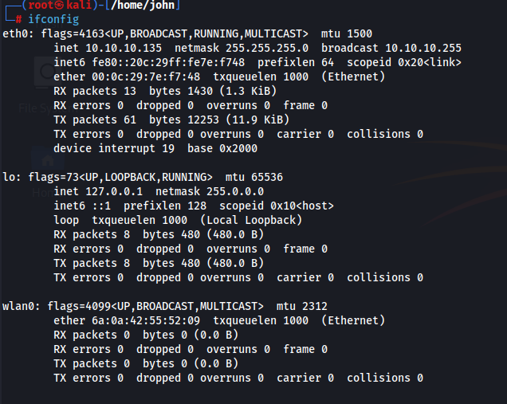

A Generic Page
There 2 types of mode that a wireless interface can enter, Monitor Mode or Managed Mode.
"monitor mode" allows a device to passively capture all wireless traffic on a network without joining it,
while "managed mode" refers to the standard operation where a device actively connects to a network as a client, following the network's rules and authentication procedures.
And not all Wireless interfaces support Monitor Mode anly a few one, like in my case i'm using RTL8812AU
Now Let's start this amazing SHIET

Step 01 - disable the interface

Step 02 - kill some process for better performing

Step 03 - Activate the Monitor Mode using Airmon-ng

Step 04 - Activate the interface and check if the interface is in monitor mode